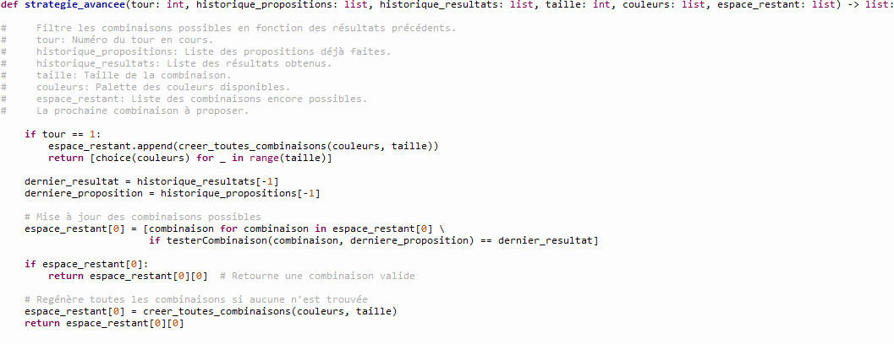
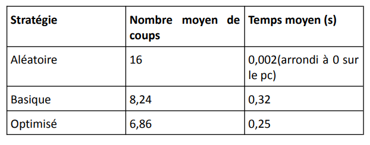

Contexte et objectif
Dans ce projet, l'objectif était de développer et de comparer différentes stratégies algorithmiques pour résoudre le jeu **Mastermind**. À partir d'un fichier de données contenant des configurations du jeu, plusieurs approches ont été mises en place pour deviner la combinaison secrète en un nombre limité d'essais.
Le défi consistait à implémenter et tester différentes stratégies, puis à analyser laquelle serait la plus performante en termes de nombre d'essais et de rapidité.
Les stratégies développées
J'ai mis en place plusieurs stratégies pour résoudre le jeu Mastermind. Chaque stratégie utilise une approche différente pour déterminer la combinaison secrète. Voici les stratégies principales que j'ai développées :
- Stratégie Aléatoire : Cette stratégie génère une combinaison en choisissant des couleurs au hasard à chaque tour, sans considérer les résultats précédents.
- Stratégie Basique (« moins efficace ») : Cette stratégie génère toutes les combinaisons possibles, puis élimine celles incompatibles avec les résultats précédents.
- Stratégie optimisée : Elle repose sur un filtrage avancé, priorisant les combinaisons selon la fréquence des couleurs.
Approche de la comparaison
Pour comparer ces stratégies, j'ai utilisé un fichier de données contenant des informations sur plusieurs jeux Mastermind, avec des configurations de combinaisons secrètes et les tentatives effectuées pour les deviner. Les critères de comparaison sont :
- Nombre d'essais : Le nombre de tentatives nécessaires pour trouver la combinaison secrète.
- Temps d'exécution : Le temps qu'il faut pour résoudre le jeu avec chaque stratégie.
- Complexité algorithmique : La comparaison des stratégies en fonction de leur complexité et de leur efficacité pour résoudre des jeux avec différentes tailles de combinaisons ou nombres d'essais.
Exemple de code pour la stratégie optimisée
Voici un extrait du code pour la stratégie optimisée, qui analyse le feedback à chaque tentative :
Cette fonction permet d'éliminer les combinaisons qui ne correspondent pas au feedback reçu, en réduisant progressivement l'espace de recherche.
Résultats obtenus
Les résultats de mes tests ont montré que la stratégie optimisée basée sur l'algorithme de Knuth était la plus efficace, nécessitant moins d'essais et moins de temps pour résoudre le jeu. Voici un résumé des performances :
- Stratégie Aléatoire :Bien qu'elle soit simple à implémenter, elle ne prend pas en compte les résultats des tentatives précédentes, ce qui la rend inefficace en termes de nombre d'essais.
- Stratégie Basique (« moins efficace ») : Plus efficace que la stratégie aléatoire, elle permet de réduire le nombre d'essais, mais elle reste moins performante que l'algorithme optimisé.
- Stratégie optimisée : La plus rapide et efficace, permettant de résoudre le jeu en un nombre minimal d'essais, avec une complexité plus faible que les autres méthodes.
Visualisation des résultats
Voici un tableau illustrant le nombre d'essais nécessaires pour résoudre plusieurs jeux Mastermind avec les différentes stratégies :
Ce que j'ai aimé
- La mise en place de la logique du jeu et l'interaction avec les joueurs.
- L'utilisation de Pygame pour créer une interface graphique pour le jeu.
- Résoudre un problème concret et voir l'aboutissement du projet fonctionner.
Ce que j'ai pas aimé
- La complexité de la gestion de l'interface utilisateur avec Pygame, qui était un peu contraignante au début.
- La difficulté de faire fonctionner parfaitement le jeu sans bugs malgré mes efforts pour gérer toutes les interactions possibles.
Conclusion
Ce projet m'a permis de mettre en œuvre plusieurs stratégies algorithmiques pour résoudre le jeu Mastermind. L'implémentation de ces stratégies et leur comparaison m'a aidé à mieux comprendre les concepts de réduction d'espace de recherche, d'optimisation et d'analyse des performances. L'algorithme de Knuth s'est révélé être la méthode la plus performante pour résoudre ce type de problème dans un temps optimal.